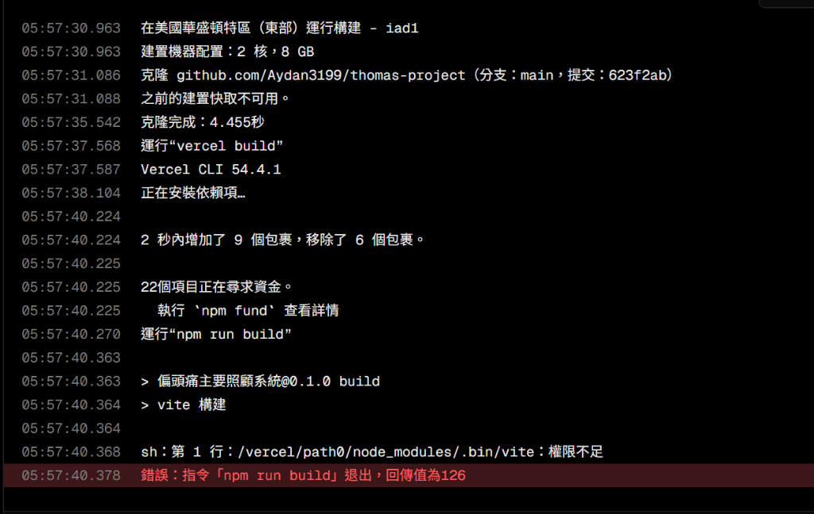
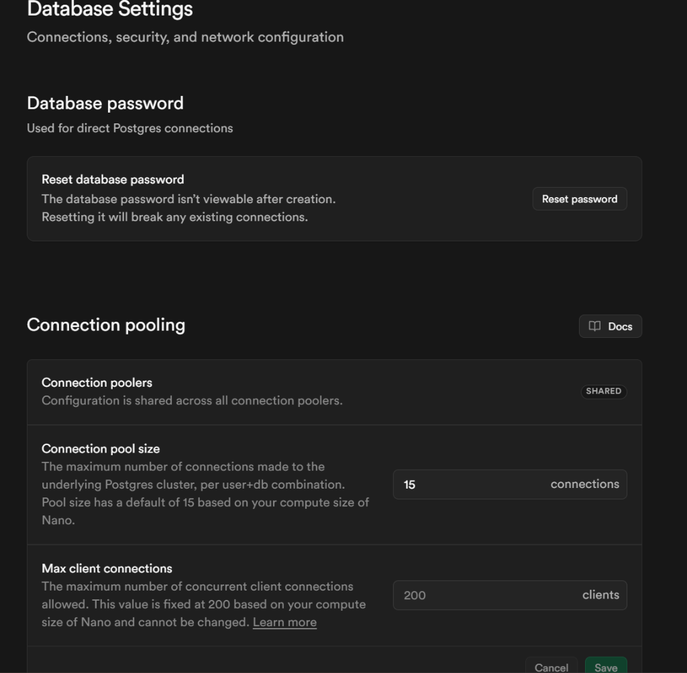
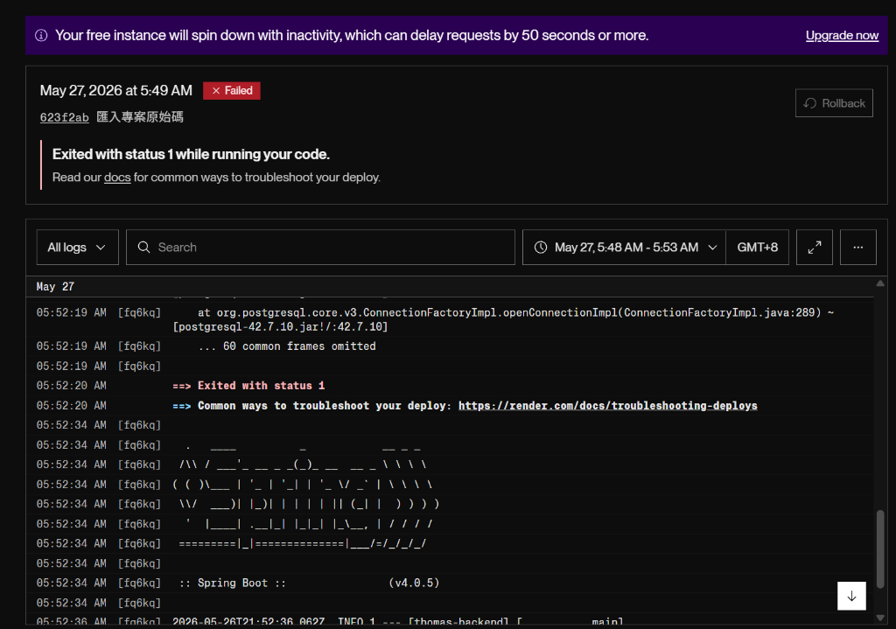
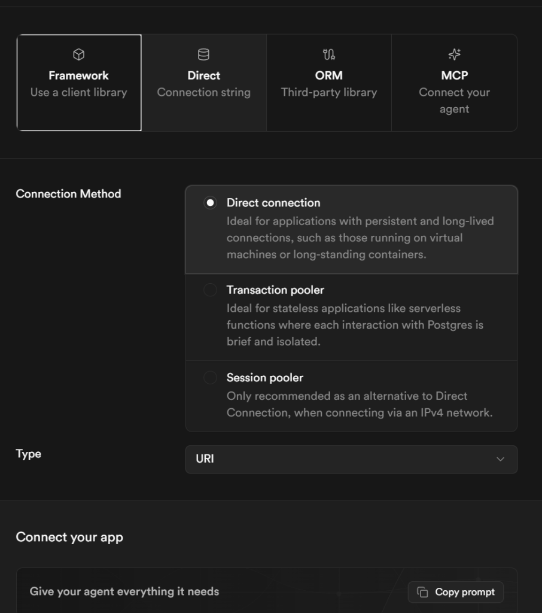

偏頭痛是一項影響全球數億人生活與工作的慢性疾病，然而許多病患在發作時多未進行完整且規律的臨床紀錄。醫師在進行診斷與追蹤時，往往只能依賴病患模糊的記憶或零散的紙本紀錄，使得診斷缺乏客觀依據、病歷難以追蹤，且數據資料無法進行系統化的統計與分析。
本照護管理系統針對此痛點，提供直覺的症狀紀錄、規律的回診記錄、智慧提醒與歷史量表統合等功能，期望協助改善醫療端的精準決策流程與個案的長期照護品質。
本研究致力於開發「偏頭痛個案照護管理系統」，無縫整合日常偏頭痛日誌、健康評估量表、臨床提醒追蹤與醫學統計圖表。
其核心研究價值在於：
本系統採行高可用性之前後端分離技術架構開發。前端網頁端採用 React.js、Tailwind CSS 建立極致流暢、具高互動感的護眼暗色調（HSL Palette）響應式儀表板；後端採用 Spring Boot 結合 JPA 控制層，並選用 Supabase / PostgreSQL 作為實體資料庫，實踐真正的即時資料異步同步。




本照護管理系統整合偏頭痛發作日記、規律回診提醒與健康評估量表，不僅大幅降低病患發作時的紀錄難度，亦全面提升醫師的臨床診斷評估效率。初步的使用者測試與臨床案例訪談回饋顯示：
系統流程順暢，統計圖表能直覺化反映症狀演變趨勢，對門診用藥調整具極大決策輔助價值。未來規劃進一步引進機器學習模型，預測個別病患之發作風險，以健全更具前瞻性的偏頭痛數位照護體系。